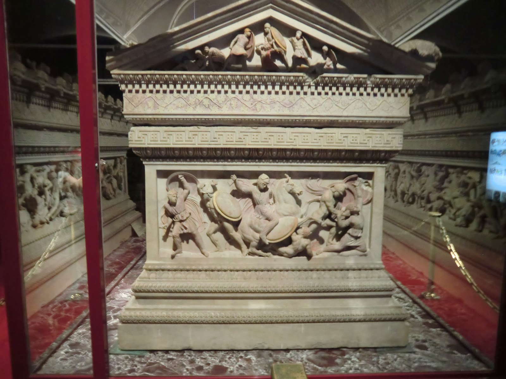

🪖Regreso desde la India
(326–324 a.C.)
Después de conquistar gran parte del noroeste de la India y vencer al rey Poros en la batalla del Hidaspes, sus tropas, cansadas y desmoralizadas, se negaron a continuar. Alejandro accedió a regresar, cruzando el desierto de Gedrosia, donde perdió miles de soldados por el calor, la sed y el hambre. Esta etapa fue una de las más difíciles de su campaña.

🏛️Regreso desde la India
Una vez de regreso en Babilonia, Alejandro intentó consolidar su imperio: organizó matrimonios mixtos entre macedonios y persas, promovió la fusión cultural y planeaba nuevas conquistas, incluyendo Arabia y el oeste del Mediterráneo. Sin embargo, sus decisiones provocaron tensiones con sus generales, quienes temían perder su influencia.

⚰️ Enfermedad y muerte (323 a.C.)
En junio del 323 a.C., en Babilonia, Alejandro cayó gravemente enfermo tras un banquete. Tras varios días de fiebre alta, murió a los 32 años. Las causas siguen siendo debatidas: malaria, fiebre tifoidea o incluso envenenamiento. Su muerte dejó un enorme vacío y desató guerras entre sus generales (los diádocos), que dividieron su imperio.
Ultimos años de vida y muerde de Alejandro Magno
(clic en la imagen para ver la información)